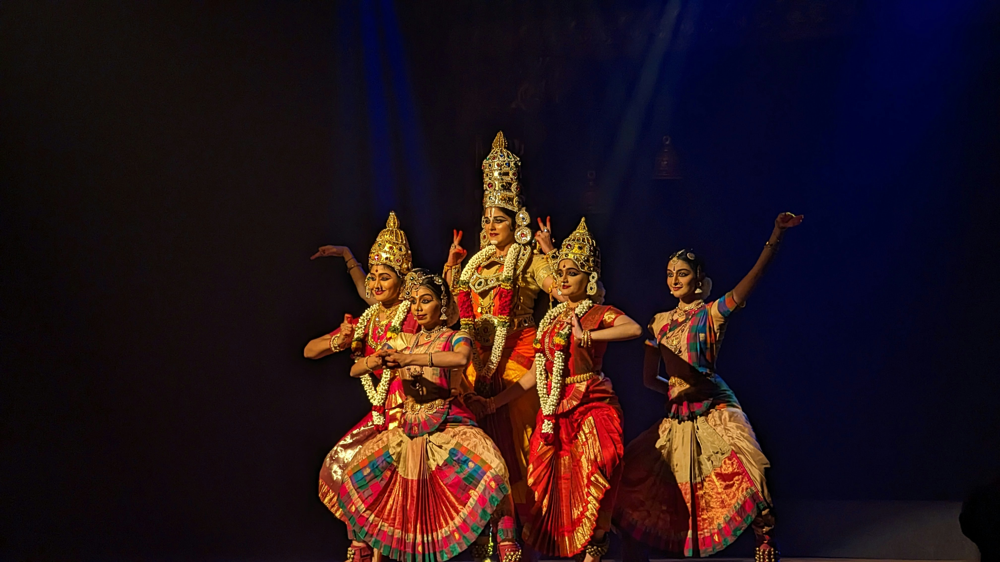

Welcome to ICT Department

VNSGU Cultural Fest

The Department of Information and Communication Technology at Veer Narmad South Gujarat University is dedicated to delivering cutting-edge education and research in technology. We nurture innovation, creativity, and industry-ready skills.
Watch this short video to learn more about our vision, mission, and achievements.